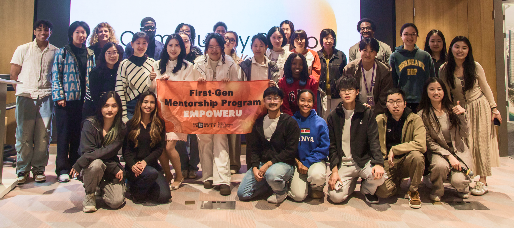

Unconventional.
No running water, chicks in the bedroom, eight moves before finishing school. Nothing about the path was obvious, and nothing since has been either.
My family built our house by hand, board by board, nail by nail. Growth was measured in pencil marks on a doorframe and the number of doors on the house. This is that character in education: a life of building, learning, and leaving something sturdier behind.
Four years teaching secondary German and English in a rural public school, including children of American soldiers from the Vietnam War and a behavioral support program. This was where I first learned that student agency begins with trust, structure, and seeing each learner as a whole human being.
Taught Cambridge English and IELTS from kindergarten through adult professionals in German-speaking Switzerland, deepening the bilingual and intercultural practice that would shape the rest of my career.
Wrote the weekly Kat's Window on Thailand column for Asia's second-largest English newspaper, developing an educational voice rooted in public writing, community learning, and social literacy.
Completed the MA TESOL at UNSW and taught across all year groups in Myanmar. Built a 60-hour teacher training program with the British Council and contributed to a literacy and language-learning culture that reached beyond one classroom.
Held combined academic and pastoral responsibility across the secondary school, leading EAL curriculum, student debate, international days, boarding, and CIS accreditation. This was the start of my institutional building work: systems, culture, and belonging at scale.
Built the EAL department from scratch. Before arriving, there was no department: students were simply pulled out of classes for ad hoc, unstructured instruction. I built the model, staff, curriculum, and evaluation cycle that made language support sustainable and academically rigorous.
Built whole-school student services from inception within twelve months, trained faculty in inclusive practice, CLIL, and differentiation, rebuilt admissions around the student experience, and designed systems to support learning equity at a major international school.
Progressed from Adjunct Lecturer to Senior Lecturer. Designed four interdisciplinary first-year courses, led belonging and DEI work, built community-engaged learning with public outcomes, and created systems that connect academic learning to civic and student agency.
The most important aspect of my work is whom I teach, not what I teach.

Students leading, shaping, and acting through agency in community and learning.
No running water, chicks in the bedroom, eight moves before finishing school. Nothing about the path was obvious, and nothing since has been either.
What that upbringing taught me. Cook with whatever's on hand. Build a curriculum from nothing. Build a house from nothing. Build a department from nothing.
I say the thing. The room catches up later.
What directness and resourcefulness produce: systems that didn't exist before I arrived and still run after I leave.
The mature version of building. Not one system, but six that feed each other. The hats are different. The head is the same.
About my students, about fairness, about doing it right. Quietly, consistently, and with receipts.
I look at hard things and don't look away.
On paper, four jobs. In my week, one practice. Monday's course design sends students into the community on Wednesday. The community work surfaces a belonging gap on Thursday. Friday becomes a systems-design session. The work is never isolated; it is integrated leadership.
Designs rigorous, future-facing academic experiences from a blank page, then builds the infrastructure that makes them work.
Moves beyond statements about belonging and builds the teaching, mentoring, and faculty systems that make it visible.

Designs experiential learning that produces public outcomes, not just assignments students forget after the semester ends.
Combines operational discipline with a clear moral purpose: better systems, stronger students, and decisions that can survive scrutiny.
A structured framework guiding learners across seven key dimensions—Voice, Choice, Engagement, Motivation, Ownership, Purpose, and Self-Efficacy—moving from teacher-centered structure toward student-led learning and meaningful action.

Content by Kathleen McClaskey and Katherine Tosi